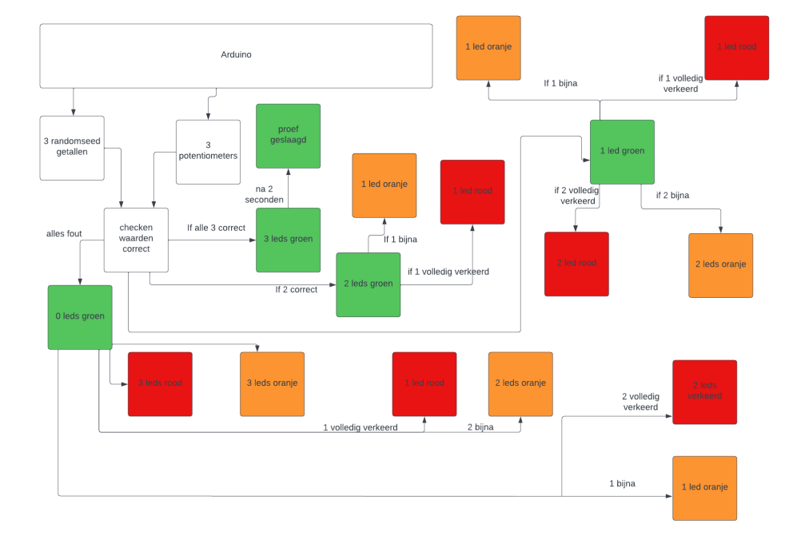
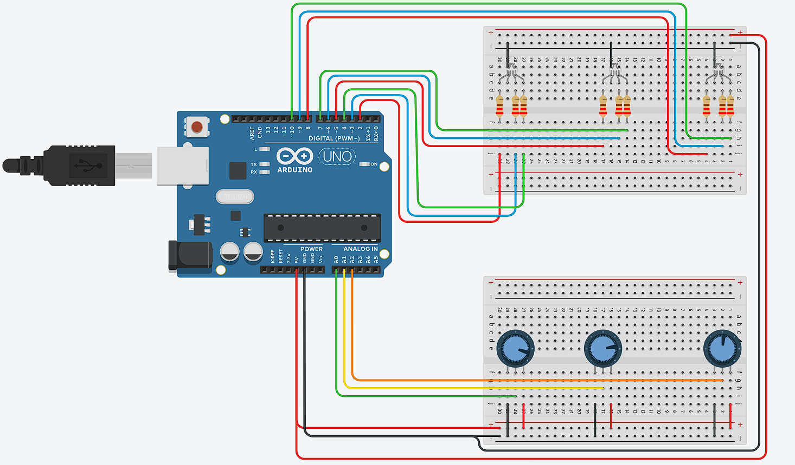
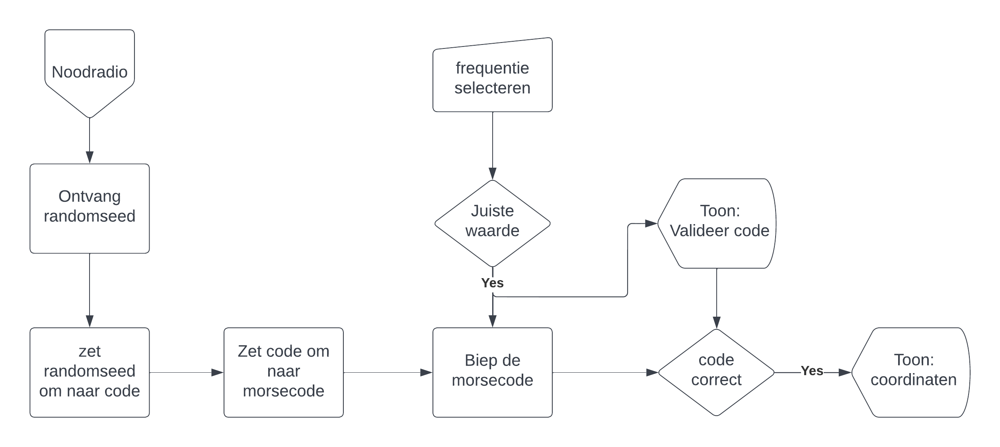
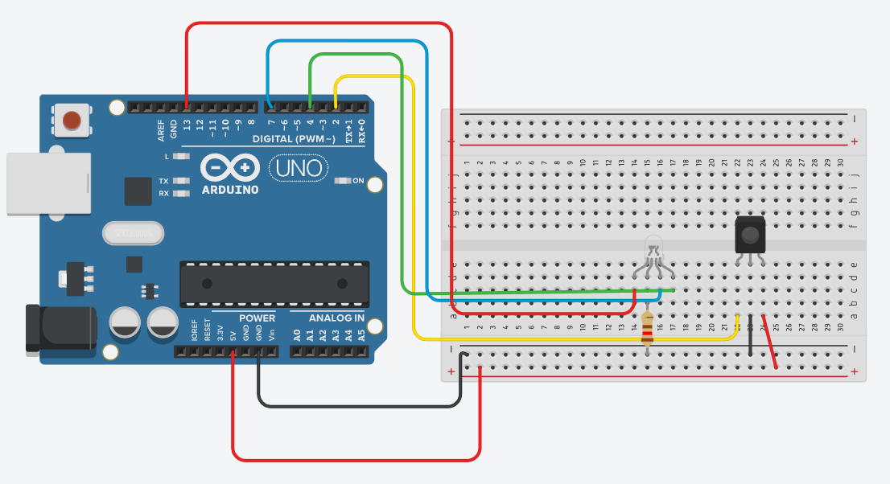

Stranded in space

Je bent gestrand in de ruimte met een lekkende zuurstof tank. Deze bepaald hoeveel tijd je hebt om de puzzels op te lossen. Het doel is om de juiste coördinaten te verkrijgen en jezelf te redden. Er is echter een probleem; de machinekamer waar de coördinaten worden ingegeven is vergrendeld.
Je komt terecht in een ruimte waar je de eerste puzzel ziet. Deze bestaat uit een codeslot van potentiometers. (random seed, servo, potmeters) Je moet ze in de juiste stand zetten, eenmaal in de juiste stand licht er een lampje op. Als alle lampjes opgelicht zijn gaat een deurtje open en krijg je toegang tot een afstandsbediening.
Verder zul je deze nodig hebben om de servers aan te zetten. (afstandsbediening met IR) Met deze servers moet je proberen in te loggen. (WiFi communicatie met ESP) Er zal dan een website klaarstaan. Eenmaal succesvol ingelogd krijgt de speler een code te zien.
Deze code moet ingegeven worden op een touchpad om zo toegang te krijgen tot de machinekamer (touchpad, servo).
In de machinekamer moet men eerst de coördinaten te weten te komen door de juiste frequentie instellen op de radio.
Vervolgens worden de coördinaten meegegeven. (SD kaart met preloaded stem) Deze worden ingevoerd met een numpad. Er zullen 4 coördinaatgetallen zijn. (7 segment of LCD) Als deze juist zijn ingegeven en de speler drukt op een grote rode knop, dan heeft hij gewonnen.
Team
| 1 | Amparo Walter | 1ELO - |
| 2 | Jonathan Van Caloen | 1ICT - 6 |
| 3 | Omrane Haj Mohamed | 1ICT - 1 |
| 4 | Shaher Fazli | 1ICT - 2 |
| 5 | Xander Van Bogaert | 1ELO - 1 |
1. Code lock for remote control
Explanation
The arduino generates with randomseed those numbers.
You have to rotate these numbers with the 3 potentiometers.
If all 3 are good for longer than 2 seconds, the test is passed.
Schemas
Logic Scheme
Arduino Scheme
Code
//RGB LED 1
int led1RedLightPin = 2;
int led1BlueLightPin = 3;
int led1GreenLightPin = 4;
//RGB LED 2
int led2RedLightPin = 5;
int led2BlueLightPin = 6;
int led2GreenLightPin = 7;
//RGB LED 3
int led3RedLightPin = 8;
int led3BlueLightPin = 9;
int led3GreenLightPin = 10;
//potentiometers
int sensor1Pin = 0;
int sensor2Pin = 1;
int sensor3Pin = 2;
//randomNumbers
//potentiometer 1
long randomNumber1;
int sensor1Value;
//potentiometer 2
long randomNumber2;
int sensor2Value;
//potentiometer 3
long randomNumber3;
int sensor3Value;
// puzzle
unsigned long eindeFout;
bool activeer = false;
void setup() {
// put your setup code here, to run once:
Serial.begin(9600);
//rgbLeds
//rgbLed1
pinMode(led1RedLightPin, OUTPUT);
pinMode(led1BlueLightPin, OUTPUT);
pinMode(led1GreenLightPin, OUTPUT);
//rgbLed2
pinMode(led2RedLightPin, OUTPUT);
pinMode(led2BlueLightPin, OUTPUT);
pinMode(led2GreenLightPin, OUTPUT);
//rgbLed3
pinMode(led3RedLightPin, OUTPUT);
pinMode(led3BlueLightPin, OUTPUT);
pinMode(led3GreenLightPin, OUTPUT);
//potentiometers
//potentiometer 1
pinMode(A0, INPUT);
//potentiometer 2
pinMode(A1, INPUT);
//potentiometer 3
pinMode(A2, INPUT);
randomSeed(analogRead(A3)); //randomSeed on Unused analog pin to read noise (=values of the ambient)
//generating random numbers for potentiometers
// potentiometer 1
randomNumber1 = random(1, 16);
// potentiometer 2
randomNumber2 = random(1, 16);
// potentiometer 3
randomNumber3 = random(1, 16);
}
void loop() { // put your main code here, to run repeatedly:
// reading and remapping potentiometer values
// potentiometer 1
sensor1Value = map(analogRead(A0), 0, 1023, 0, 16);
// potentiometer 2
sensor2Value = map(analogRead(A1), 0, 1023, 0, 16);
// potentiometer 3
sensor3Value = map(analogRead(A2), 0, 1023, 0, 16);
// amount correct potentiometer inputs
int amountOfCorrect = 0;
if (sensor3Value == randomNumber3) {
amountOfCorrect++;
}
if (sensor2Value == randomNumber2) {
amountOfCorrect++;
}
if (sensor1Value == randomNumber1) {
amountOfCorrect++;
}
// amount almost correct potentiometer inputs
int amountOfAlmost = 0;
if (almostCorrect(sensor1Value, randomNumber1)) {
amountOfAlmost++;
}
if (almostCorrect(sensor2Value, randomNumber2)) {
amountOfAlmost++;
}
if (almostCorrect(sensor3Value, randomNumber3)) {
amountOfAlmost++;
}
// amount wrong potentiometer inputs
int amountWrong = 0;
if (wrong(sensor1Value, randomNumber1)) {
amountWrong++;
}
if (wrong(sensor2Value, randomNumber2)) {
amountWrong++;
}
if (wrong(sensor3Value, randomNumber3)) {
amountWrong++;
}
//setting rgb LEDs----------------------------------------------------------------------------------------------------
if (amountOfCorrect == 3) { // if all 3 potentiometers are in the correct position
if (millis() - eindeFout > 2000) {
activeer = true;
Serial.println("geslaagd");
}
if (activeer) {
// rgb LED 3
rgbLedOut(8, 9, 10); //int redLightPin, int greenLightPin, int blueLightPin
// rgb LED 2
rgbLedOut(5, 6, 7); //int redLightPin, int greenLightPin, int blueLightPin
// rgb LED 1
rgbLedOut(2, 3, 4); //int redLightPin, int greenLightPin, int blueLightPin
delay(500);
// rgb LED 3
rgbLedColorGreenGood(8, 9, 10); //int redLightPin, int greenLightPin, int blueLightPin
// rgb LED 2
rgbLedColorGreenGood(5, 6, 7); //int redLightPin, int greenLightPin, int blueLightPin
// rgb LED 1
rgbLedColorGreenGood(2, 3, 4); //int redLightPin, int greenLightPin, int blueLightPin
delay(500);
}
else {
// rgb LED 3
rgbLedColorGreenGood(8, 9, 10); //int redLightPin, int greenLightPin, int blueLightPin
// rgb LED 2
rgbLedColorGreenGood(5, 6, 7); //int redLightPin, int greenLightPin, int blueLightPin
// rgb LED 1
rgbLedColorGreenGood(2, 3, 4); //int redLightPin, int greenLightPin, int blueLightPin
}
}
else if (amountOfCorrect == 2) { // if 2 potentiometers are in the correct position
eindeFout = millis();
// rgb LED 2
rgbLedColorGreenGood(5, 6, 7); //int redLightPin, int greenLightPin, int blueLightPin
// rgb LED 1
rgbLedColorGreenGood(2, 3, 4); //int redLightPin, int greenLightPin, int blueLightPin
// third potentiometer wrong or almost
//almost
if (amountOfAlmost == 1) {
rgbLedColorOrangeAlmost(8, 9, 10); //int redLightPin, int greenLightPin, int blueLightPin
}
//wrong
else if (amountWrong == 1) {
rgbLedColorRedWrong(8, 9, 10); //int redLightPin, int greenLightPin, int blueLightPin
}
}
else if (amountOfCorrect == 1) { // if 1 potentiometer is in the correct position
eindeFout = millis();
// rgb LED 1
rgbLedColorGreenGood(2, 3, 4); //int redLightPin, int greenLightPin, int blueLightPin
// second and third potentiometer wrong or almost
// rgb LED 3
//almost
if (amountOfAlmost == 1) {
rgbLedColorOrangeAlmost(5, 6, 7); //int redLightPin, int greenLightPin, int blueLightPin
}
//wrong
else if (amountWrong == 1) {
rgbLedColorRedWrong(8, 9, 10); //int redLightPin, int greenLightPin, int blueLightPin
}
// rgb LED 2
//almost
if (amountOfAlmost == 2) {
rgbLedColorOrangeAlmost(8, 9, 10); //int redLightPin, int greenLightPin, int blueLightPin
rgbLedColorOrangeAlmost(5, 6, 7); //int redLightPin, int greenLightPin, int blueLightPin
}
//wrong
if (amountWrong == 2) {
rgbLedColorRedWrong(8, 9, 10); //int redLightPin, int greenLightPin, int blueLightPin
rgbLedColorRedWrong(5, 6, 7); //int redLightPin, int greenLightPin, int blueLightPin
}
}
if (amountOfAlmost == 3) { // all 3 potentiometers almost
eindeFout = millis();
rgbLedColorOrangeAlmost(8, 9, 10); //int redLightPin, int greenLightPin, int blueLightPin
rgbLedColorOrangeAlmost(5, 6, 7); //int redLightPin, int greenLightPin, int blueLightPin
rgbLedColorOrangeAlmost(2, 3, 4); //int redLightPin, int greenLightPin, int blueLightPin
}
if (amountWrong == 3) {
eindeFout = millis();
rgbLedColorRedWrong(8, 9, 10); //int redLightPin, int greenLightPin, int blueLightPin
rgbLedColorRedWrong(5, 6, 7); //int redLightPin, int greenLightPin, int blueLightPin
rgbLedColorRedWrong(2, 3, 4); //int redLightPin, int greenLightPin, int blueLightPin
}
}
// Checking if input is almost correct
bool almostCorrect(int remapped, int randomValue) {
int randomPlus1 = randomValue + 2;
int randomMinus1 = randomValue - 2;
if (remapped == randomPlus1) { // chekcing input value is random value + 1
return true;
}
else if (remapped == randomMinus1) { // chekcing input value is random value - 1
return true;
}
else {
return false;
}
}
// Checking if input is wrong
bool wrong(int remapped, int randomValue) {
int randomPlus1 = randomValue + 1;
int randomMinus1 = randomValue - 1;
if (remapped > randomPlus1) { // chekcing input value is greater than randomValue + 2
return true;
}
else if (remapped < randomMinus1) { // chekcing input value is lesser than randomValue - 2
return true;
}
else {
return false;
}
}
// Color rgb LED sets
void rgbLedColorGreenGood(int redLightPin, int blueLightPin, int greenLightPin) {
analogWrite(redLightPin, 0);
analogWrite(greenLightPin, 255);
analogWrite(blueLightPin, 0);
}
void rgbLedColorOrangeAlmost(int redLightPin, int blueLightPin, int greenLightPin) {
analogWrite(redLightPin, 255);
analogWrite(greenLightPin, 255);
analogWrite(blueLightPin, 0);
}
void rgbLedColorRedWrong(int redLightPin, int blueLightPin, int greenLightPin) {
analogWrite(redLightPin, 255);
analogWrite(greenLightPin, 0);
analogWrite(blueLightPin, 0);
}
void rgbLedOut(int redLightPin, int blueLightPin, int greenLightPin) {
analogWrite(redLightPin, 0);
analogWrite(greenLightPin, 0);
analogWrite(blueLightPin, 0);
}
2. Server connection through the website
Explanation
Schemas
Logic Scheme
Arduino Scheme
Code
3. Access to the engine Room
Explanation
The idea is that you are going to have to use the code that you found once you logged in, you enter the code on the numpad and then you get access to the machine room!
Schemas
Logic Scheme

Arduino Scheme

Code
#include <'Keypad.h'>
#include <'LiquidCrystal.h'>
#include <'Servo.h'>
#define Password_Length 5
Servo myservo;
LiquidCrystal lcd(A0, A1, A2, A3, A4, A5);
int pos = 0;
char Data[Password_Length];
char Master[Password_Length] = "1234";
byte data_count = 0, master_count = 0;
bool Pass_is_good;
bool door = false;
char customKey;
/*---preparing keypad---*/
const byte ROWS = 4;
const byte COLS = 4;
char keys[ROWS][COLS] = {
{'1', '2', '3', 'A'},
{'4', '5', '6', 'B'},
{'7', '8', '9', 'C'},
{'*', '0', '#', 'D'}
};
byte rowPins[ROWS] = {0, 1, 2, 3};
byte colPins[COLS] = {4, 5, 6, 7};
Keypad customKeypad( makeKeymap(keys), rowPins, colPins, ROWS, COLS);
/*--- Main Action ---*/
void setup()
{
myservo.attach(9, 2000, 2400);
ServoClose();
lcd.begin(16, 2);
lcd.print("Protected Door");
loading("Loading");
lcd.clear();
}
void loop()
{
if (door == true)
{
customKey = customKeypad.getKey();
if (customKey == '#')
{
lcd.clear();
ServoClose();
lcd.print("Door is closed");
delay(3000);
door = false;
}
}
else
Open();
}
void loading (char msg[]) {
lcd.setCursor(0, 1);
lcd.print(msg);
for (int i = 0; i < 9; i++) {
delay(1000);
lcd.print(".");
}
}
void clearData()
{
while (data_count != 0)
{
Data[data_count--] = 0;
}
return;
}
void ServoClose()
{
for (pos = 90; pos >= 0; pos -= 10) {
myservo.write(pos);
}
}
void ServoOpen()
{
for (pos = 0; pos <= 90; pos += 10) {
myservo.write(pos);
}
}
void Open()
{
lcd.setCursor(0, 0);
lcd.print("Enter Password");
customKey = customKeypad.getKey();
if (customKey)
{
Data[data_count] = customKey;
lcd.setCursor(data_count, 1);
lcd.print(Data[data_count]);
data_count++;
}
if (data_count == Password_Length - 1)
{
if (!strcmp(Data, Master))
{
lcd.clear();
ServoOpen();
lcd.print(" Door is Open ");
door = true;
delay(5000);
loading("Waiting");
lcd.clear();
lcd.print(" Time is up! ");
delay(1000);
ServoClose();
door = false;
}
else
{
lcd.clear();
lcd.print(" Wrong Password ");
door = false;
}
delay(1000);
lcd.clear();
clearData();
}
}
4. Phreaking communications
Explanation
Gebruik de noodradio om de coordinaten te ontvangen waarmee je gered kan worden.
1) Vind de juiste frequentie
2) Ontcijfer het binnenkomend audio-signaal
->Morse-code
3) Geef de cijfercode in
4) De coordinaten verschijnen op het display.
Met deze coordinaten kan je verder naar het navigatiesysteem.
Schemas
Logic Scheme
Arduino Scheme

Code
// include the library code:
#include <'LiquidCrystal.h'>
#define r1 1 //grijs
#define r2 2 //geel
#define speaker 3
#define r3 4 //paars
#define k1 5 //blauw
#define k2 6 //oranje
#define k3 7 // groen
// initialize the library with the numbers of the interface pins
LiquidCrystal lcd(13, 12, 11, 10, 9, 8);
void(* resetFunc) (void) = 0; //functie dat arduino reset
int freq[] = {1310, 2560, 3682, 4840, 5210, 6365, 7420, 8192, 9080};
byte kanaalSignaal;
int geheimeCode;
int coordinaat = 358;
bool aan = false;
int morseSnelheid = 150;
byte kanaalKeuze = 1;
byte nummerKeuze = 0;
byte gameFase = 0;
byte ingevoerdGetal[] = {0, 0};
unsigned long prevMillis = 0;
unsigned long eindeFout = 0;
unsigned long vorigeDruk = 0;
byte oudNummerKeuze = 10;
void setup() {
randomSeed(32);
geheimeCode = random(12, 100);
kanaalSignaal = random(3, 10);
lcd.begin(16, 2);
pinMode(k1, OUTPUT);
pinMode(k2, OUTPUT);
pinMode(k3, OUTPUT);
pinMode(r1, INPUT_PULLUP);
pinMode(r2, INPUT_PULLUP);
pinMode(r3, INPUT_PULLUP);
Serial.begin(115200);
Serial.print("Geheime code: ");
Serial.println(geheimeCode);
Serial.end();
}
void loop() {
if(aan) {
//gameFases
//apparaat aangezet
if(gameFase == 0) {
kanaalKeuze = min(kanaalKeuze, 9);
lcd.setCursor(0, 0);
lcd.print("NoodRadio CH: ");
lcd.print(kanaalKeuze);
lcd.setCursor(0, 1);
String printen = "Freq: ";
printen += freq[kanaalKeuze-1] / 1000.0;
printen += "kHz";
printen += " ";
lcd.print(printen);
if(kanaalKeuze == kanaalSignaal) {
speelMorse(geheimeCode);
if(millis() - eindeFout > 2000) {
gameFase = 1;
kanaalKeuze = 1;
} else {
eindeFout = millis();
}
}
}
//radiofrequentie gevonden, speel morse
if(gameFase == 1) {
kanaalKeuze = min(kanaalKeuze, 9);
nummerKeuze = min(nummerKeuze, 1);
lcd.setCursor(0, 0);
lcd.print("Geef Code: ");
if(oudNummerKeuze == nummerKeuze) {
ingevoerdGetal[nummerKeuze] = kanaalKeuze;
} else {
oudNummerKeuze = nummerKeuze;
kanaalKeuze = ingevoerdGetal[nummerKeuze];
}
for(int i = 0; i < sizeof(ingevoerdGetal); i++) {
lcd.setCursor(i, 1);
if(i == nummerKeuze) {
if(millis() % 800 > 400) {
lcd.print("_");
} else {
lcd.print(ingevoerdGetal[i]);
}
} else {
lcd.print(ingevoerdGetal[i]);
}
}
lcd.print(" ");
if(getIngeduwdeKnop() == 2 && millis() - vorigeDruk > 200) {
if(ingevoerdGetal[0]*10 + ingevoerdGetal[1] == geheimeCode) {
gameFase = 2;
} else {
lcd.setCursor(3, 1);
lcd.print("FOUT: REPLAY");
speelMorse(geheimeCode);
}
}
}
//morsecode gekraakt, geef coordinaten
if(gameFase == 2) {
lcd.setCursor(0, 0);
if(millis() % 2000 > 1000) {
lcd.print("Coordinaten ");
} else {
lcd.print("ontvangen: ");
}
lcd.setCursor(0, 1);
String printen = "X:";
printen += coordinaat / 100;
printen += " Y:";
printen += coordinaat % 100 / 10;
printen += " Z:";
printen += coordinaat % 10;
lcd.print(printen);
}
}
//knoppen
if(millis() - vorigeDruk > 200) {
vorigeDruk = millis();
switch(getIngeduwdeKnop()) {
case 7: //knop UP
kanaalKeuze += 1;
break;
case 9: //knop DOWN
kanaalKeuze -= 1;
break;
case 3: //knop LEFT
nummerKeuze -= 1;
break;
case 4: //knop RIGHT
nummerKeuze += 1;
break;
case 8: //knop POWER
aan = true;
break;
case 1:
resetFunc();
break;
default:
break;
}
}
}
//morse afspelen
void speelMorse(int code) {
code = code % 100;
int codeArray[] = {code % 100 / 10, code % 10};
for(int i = 0; i < sizeof(codeArray)/sizeof(int); i ++) {
speelMorseCijfer(codeArray[i]);
delay(morseSnelheid * 5);
}
}
void speelMorseCijfer(int cijfer) {
Serial.println(cijfer);
cijfer = cijfer % 10;
if(cijfer == 0) { cijfer = 10; }
if(cijfer <= 5) {
for(int i = 0; i < cijfer; i++) {
speelToon(1);
}
for(int i = cijfer; i < 5; i++) {
speelToon(4);
}
} else {
for(int i = 5; i < cijfer; i++) {
speelToon(4);
}
for(int i = cijfer; i < 10; i++) {
speelToon(1);
}
}
}
void speelToon(int tijd) {
tijd = morseSnelheid * tijd;
tone(speaker, 820, tijd);
delay(tijd);
noTone(speaker);
delay(morseSnelheid);
}
//gedrukte knop uit knoppenmatrix halen
int getIngeduwdeKnop() {
int ingeduwdeKnop;
digitalWrite(k1, LOW); //kolom 1
if(!digitalRead(r1)) {
ingeduwdeKnop = 1;
} else if(!digitalRead(r2)) {
ingeduwdeKnop = 2;
} else if(!digitalRead(r3)) {
ingeduwdeKnop = 3;
}
digitalWrite(k1, HIGH);
digitalWrite(k2, LOW); //kolom 2
if(!digitalRead(r1)) {
ingeduwdeKnop = 4;
} else if(!digitalRead(r2)) {
ingeduwdeKnop = 5;
} else if(!digitalRead(r3)) {
ingeduwdeKnop = 6;
}
digitalWrite(k2, HIGH);
digitalWrite(k3, LOW);//kolom 3
if(!digitalRead(r1)) {
ingeduwdeKnop = 7;
} else if(!digitalRead(r2)) {
ingeduwdeKnop = 8;
} else if(!digitalRead(r3)) {
ingeduwdeKnop = 9;
}
digitalWrite(k3, HIGH);
return ingeduwdeKnop;
}
5. Entering Coordinates
Explanation
In this challenge the user will enter the right coordinates received using the controller given.
Schemas
Logic Scheme

Arduino Scheme
Code
#include <'IRremote.h'>
#define RECV_PIN 2
#define LEDRGB_GREEN 4
#define LEDRGB_BLUE 7
#define LEDRGB_RED 12
#define OKBUTTON 64
#define ZERO 82
#define ONE 22
#define TWO 25
#define THREE 13
#define FOUR 12
#define FIVE 24
#define SIX 94
#define SEVEN 8
#define EIGHT 28
#define NINE 90
#define HASHTAG 74
#define STAR 66
const long code[4] = {HASHTAG, FIVE, FIVE, STAR};
int count = 0;
boolean lollo = true;
long arrayNumber[4];
void setup() {
Serial.begin(115200);
IrReceiver.begin(RECV_PIN, ENABLE_LED_FEEDBACK);
pinMode(LEDRGB_GREEN,OUTPUT);
pinMode(LEDRGB_BLUE,OUTPUT);
pinMode(LEDRGB_RED,OUTPUT);
}
void loop() {
if (IrReceiver.decode() && lollo) {
arrayNumber[count] = IrReceiver.decodedIRData.command;
Serial.println(IrReceiver.decodedIRData.command);
digitalWrite(LEDRGB_RED,HIGH);
count++;
delay(200);
IrReceiver.resume();
}
digitalWrite(LEDRGB_RED,LOW);
if (count == 4){
if(arrayNumber[0] == code[0] && arrayNumber[1] == code[1] && arrayNumber[2] == code[2] && arrayNumber[3] == code[3]){
Serial.println("The code is right");
digitalWrite(LEDRGB_GREEN,HIGH);
lollo = false;
}else{
Serial.println("The code is wrong");
analogWrite(LEDRGB_RED,255);
analogWrite(LEDRGB_GREEN,255);
analogWrite(LEDRGB_BLUE,255);
delay(2000);
analogWrite(LEDRGB_RED,0);
analogWrite(LEDRGB_GREEN,0);
analogWrite(LEDRGB_BLUE,0);
}
delay(1000);
count = 0;
}
}